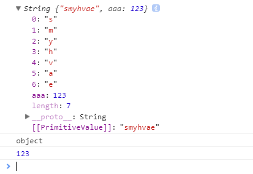

属性和方法只能添加给对象，不能添加给基本数据类型。
1、基本数据类型：
注意，基本数据类型string是无法绑定属性和方法的。比如说：
var str = 'qianguyihao'; str.aaa = 12; console.log(typeof str); //打印结果为：string console.log(str.aaa); //打印结果为：undefined
上方代码中，当我们尝试打印str.aaa的时候，会发现打印结果为：undefined。也就是说，不能给 string 绑定属性和方法。
当然，我们可以打印 str.length、str.indexOf("m")等等。因为这两个方法的底层做了数据类型转换（临时将 string 字符串转换为 String
对象，然后再调用内置方法），也就是我们在上一段中讲到的包装类。
2、引用数据类型：
引用数据类型String是可以绑定属性和方法的。如下：
var strObj = new String('smyhvae');
strObj.aaa = 123;
console.log(strObj);
console.log(typeof strObj); //打印结果：Object
console.log(strObj.aaa);
打印结果：

内置对象 Number 也有一些自带的方法，比如：
Number.MAX_VALUE;
Number.MIN_VALUE;
内置对象 Boolean 也有一些自带的方法，但是用的不多。
我们都知道，js 中的数据类型包括以下几种。
基本数据类型：String、Number、Boolean、Null、Undefined
引用数据类型：Object
JS 为我们提供了三个基本包装类：
String()：将基本数据类型字符串，转换为 String 对象。
Number()：将基本数据类型的数字，转换为 Number 对象。
Boolean()：将基本数据类型的布尔值，转换为 Boolean 对象。
通过上面这这三个包装类，我们可以将基本数据类型的数据转换为对象。
代码举例：
let str1 = 'qianguyihao';
let str2 = new String('qianguyihao');
let num = new Number(3);
let bool = new Boolean(true);
console.log(typeof str1); // 打印结果：string
console.log(typeof str2); // 注意，打印结果：object
需要注意的是：我们在实际应用中一般不会使用基本数据类型的对象。如果使用基本数据类型的对象，在做一些比较时可能会带来一些不可预期的结果。
比如说：
var boo1 = new Boolean(true); var boo2 = new Boolean(true); console.log(boo1 === boo2); // 打印结果竟然是：false
再比如说：
var boo3 = new Boolean(false);
if (boo3) {
console.log('qianguyihao'); // 这行代码竟然执行了
}
当我们对一些基本数据类型的值去调用属性和方法时，浏览器会临时使用包装类将基本数据类型转换为引用数据类型，这样的话，基本数据类型就有了属性和方法，然后再调用对象的属性和方法；调用完以后，再将其转换为基本数据类型。
举例：
var str = 'qianguyihao'; console.log(str.length); // 打印结果：11
比如，上面的代码，执行顺序是这样的：
// 步骤（1）：把简单数据类型 string 转换为 引用数据类型 String，保存到临时变量中
var temp = new String('qianguyihao');
// 步骤（2）：把临时变量的值 赋值给 str
str = temp;
// 步骤（3）：销毁临时变量
temp = null;
在底层，字符串是以字符数组的形式保存的。代码举例：
var str = 'smyhvae'; console.log(str.length); // 获取字符串的长度 console.log(str[2]); // 获取字符串中的第2个字符
上方代码中，smyhvae这个字符串在底层是以["s", "m", "y", "h", "v", "a", "e"]的形式保存的。因此，我们既可以获取字符串的长度，也可以获取指定索引
index 位置的单个字符。这很像数组中的操作。
再比如，String 对象的很多内置方法，也可以直接给字符串用。此时，也是临时将字符串转换为 String 对象，然后再调用内置方法。